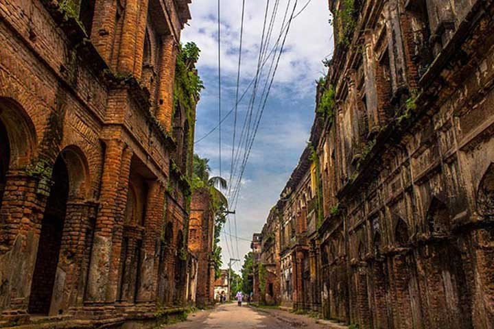

1. Lalbagh Fort:
The 17th century Mughal fort which stands by the Buriganga River is one of the oldest architecture of Bangladesh. It was built by the then Mughal Subahdar Muhammad Azam Shah, son of Emperor Aurangzeb. It is believed that the construction of the fort was never completed.
The fort consists of 3 frameworks – (i) ‘Diwan-I-Aam’ which was the residence of the Governor, (ii) a mosque and (iii) the tomb of Bibi Pari who was the daughter of Emperor Saista Khan.
Interestingly, there are some mysteries around this fort. There are tunnels underneath the fort which lead to the other side of the river. During the Sepoy Revolution of 1857, many soldiers tried to flee through those tunnels and died. Few British soldiers who followed them there, did not return. In fact, to investigate the situation, the researchers sent an elephant and a dog to those tunnels who didn’t come back as well. Soon after that horrific incident, the path was sealed.

2. Ahsan Manzil:
Initially, it was a vacation house for a Zamindar of Jamalpur district, Sheikh Enayet Ullah. After his death, his son sold this property to the French traders in 1740. They dug a pond in front of the building where fresh water could be fetched. After having a great business in the subcontinent for almost a century, they surrendered under the full British power and sold all of their properties. So, in 1830, Khwaja Alimullah – an established man in Dhaka bought the property. He added a mosque in this compound. After his death, his son Khwaja Abdul Gani made some progressive look to the property and named it “Ahsan Manzil” after his son Ahsan Ullah.
In 1985, Dhaka National Museum obtained this property and made it a museum after a long restoration process.
The Palace is divided into 2 sides. ‘Rangmahal’ is at the eastern side. It was the entertainment spot where foreign and local girls used to dance and sing for the main owner Enayet Ullah. The Ballroom was also there at this portion. The Western side has living room, dining room, a library, card room and guest rooms. The Building is front-faced by the mighty Buriganga River.

3. Panam City:
The city is located in Sonargaon of Narayanganj, just beside the capital, Dhaka. The ancient architecture of Mughal period is found here. Baro-Bhuiyans used to rule here. It was within the capital in that time. As a capital, Sonargaon was enriched with architectural beauties. Numerous British Colonial monuments and forts are seen across this 20km area.
